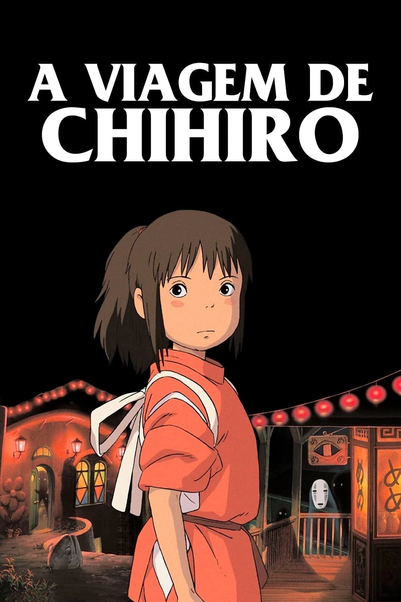

Direção: Hayao Miyazaki
Roteiro: Hayao Miyazaki
Produção: Studio Ghibli
Lançamento: 2001
Chihiro chega a um mundo mágico dominado por uma bruxa. Aqueles que a desobedecem são transformados em animais. Para salvar seus pais, ela precisa enfrentar desafios e descobrir sua força.